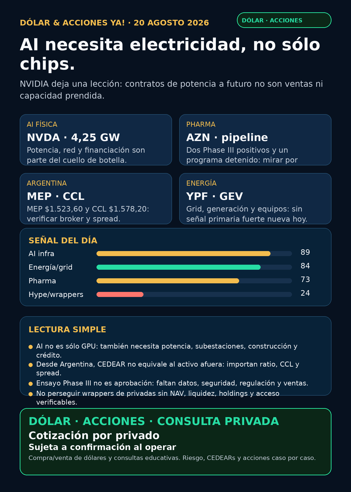

Dólar & Acciones YA — 20/08/2026
Corte: 20/08/2026, 12:30–12:56 (America/Argentina/Mendoza). Edición educativa: no es asesoramiento financiero ni una indicación de compra/venta. Cartera de Ricardo: liquidada, devuelta y terminada; no hay posiciones activas ni P&L que reportar. Política vigente: texto/visual solamente; no se generó audio.
Lectura simple del día
La señal más clara no está en un ticker “mágico”: AI está empujando una cadena física de contratos, potencia eléctrica, construcción, red y financiamiento. El filing de NVIDIA sobre Ohio ilustra esa escala, pero también enseña la trampa: un compromiso para 2028 no es facturación actual ni capacidad encendida.
En salud, AstraZeneca dejó una foto más útil que un titular triunfalista: dos resultados Phase III positivos en oncología y un programa frenado por futilidad. En criollo: en pharma se mira programa por programa; un ensayo positivo no es aprobación ni ventas, y un ensayo detenido tampoco invalida toda la compañía.
Argentina: dólar e instrumento antes que ticker
- DolarAPI, 20/08 10:56 Argentina: dólar bolsa/MEP de referencia $1.523,60 y contado con liqui/CCL de referencia $1.578,20. BlueLytics registraba último update 12:30 con blue comprador/vendedor $1.512/$1.545. Son referencias públicas, no la cotización ejecutable de tu broker.
- Para CEDEARs y ADRs, el CCL implícito, el ratio, el spread, el volumen y las comisiones pueden cambiar el resultado. Una empresa excelente afuera no equivale automáticamente a un buen instrumento local ni a un buen precio de entrada.
- Fuente FX: DolarAPI · BlueLytics. CriptoYa respondió 403 en esta corrida; no se usó su cotización.
Ranking educativo por calidad de señal — no es ranking de compra
1) NVDA — AI ya no se explica sólo con chips
- Señal fortalecida / vigilancia: el 8-K del 17/08 describe garantías de valor residual vinculadas a leases para aproximadamente 4,25 GW de carga IT en el campus PORTS de Ohio, con OpenAI como tenant. El tope inicial de obligación agregado informado es USD 105.000 millones y el ready-for-service se espera desde 2028.
- Qué enseña: GPUs necesitan electricidad, predios, construcción, subestaciones, crédito y contratos de largo plazo. El “segundo peaje de AI” es físico.
- Riesgo: es una obligación condicional; no son ventas reconocidas, ni potencia operativa hoy, ni garantía de retorno. Hay riesgo de ejecución, financiación y contraparte.
- Accionabilidad: internacional/global:
NVDAes un instrumento público líquido; Argentina: verificar CEDEAR, ratio, CCL, spread y disponibilidad real en el broker. No es una recomendación. - Fuente primaria: NVIDIA 8-K, 17/08.
2) AZN — dos avances clínicos y un freno en el mismo día
- Señal mixta / vigilancia: filings del 17/08 de AstraZeneca informaron mejora estadísticamente significativa y clínicamente relevante de PFS en
Enhertupara DESTINY-Lung04, y mejoras en PFS y OS conTagrisso + Orpathysen SAFFRON. A la vez, un comité independiente concluyó queeVOLVE-Lung02era improbable de cumplir sus endpoints principales y AZN discontinuará ese programa. - En criollo: PFS es el tiempo sin progresión y OS es sobrevida global. Son endpoints clínicos, no una aprobación de FDA/EMA, cambio de etiqueta ni ventas confirmadas.
- Riesgo: faltan datos completos, seguridad, revisión regulatoria, publicación y monetización. La señal positiva o negativa es de cada programa, no de toda la empresa.
- Accionabilidad: internacional/global: ADR
AZN; Argentina: ruta CEDEAR/ADR, liquidez y costos, pendientes de verificar por broker. - Fuentes primarias: DESTINY-Lung04 · SAFFRON · eVOLVE-Lung02 · registro DESTINY-Lung04.
3) NVO — recompras: señal de capital, no catalyst GLP-1
- Vigilar / no confundir: Novo Nordisk informó que al 14/08 había recomprado 28.884.179 acciones B desde el 4/02, a precio promedio de DKK 279,80; el valor acumulado era DKK 8.081,7 millones. El programa prevé hasta DKK 15.000 millones durante doce meses desde el 4/02.
- Lectura correcta: una recompra modifica asignación de capital y acciones en circulación; no prueba demanda de GLP-1, aprobación regulatoria ni mejora clínica.
- Riesgo: precio, resultados, competencia, cobertura y pipeline siguen siendo variables distintas.
- Fuente primaria: Novo Nordisk 6-K, 18/08.
Energía, red y power hardware
- Tesis estructural vigente: transformadores, subestaciones, switchgear, cooling y generación firme son cuellos de botella de los data centers.
GEV, Siemens Energy (ENR.DE, no Siemens AG), Hitachi/Hitachi Energy, HD Hyundai Electric y Hyosung son nombres de seguimiento global; Virginia Transformer y Delta Star son privadas, sin acción pública directa. - Señal diaria: no apareció en esta corrida un contrato, backlog, FID o guidance primario nuevo que justifique elevar un nombre de power hardware como titular. Revisado, sin señal primaria fuerte nueva.
- Argentina:
YPFpresentó estados financieros interinos al 30/06 en su 6-K del 17/08. El filing muestra ingresos trimestrales de USD 6.574 millones y resultado operativo de USD 1.813 millones en las columnas reportadas, pero antes de convertirlo en tesis hay que reconciliar segmentos, producción, caja, deuda y comparables.PAM/PAMP,TGS,VISTyCEPUfueron revisadas; sin señal operativa primaria nueva fuerte. El 8-K deCEPUdel 19/08 es sucesión ejecutiva, no un catalyst de generación. - Fuente YPF: 6-K, 17/08. Fuente CEPU: 8-K, 19/08.
Watchlist Mi Simulación — seguimiento rápido
- NVDA: señal material, pero separar contratos condicionales de ingresos y capacidad real.
- TSM, MU, ASML, GOOGL/GOOG, PLTR, AAPL, HOOD, TSLA: revisados; los filings recientes hallados son en gran medida tenencia/transferencias, no mejora operativa material. Sin señal primaria fuerte nueva en la ventana.
- RKLB: se identificó un Form 4 del 18/08; es movimiento de tenencia, no contrato, backlog ni cambio de ejecución. Revisado sin señal fundamental nueva fuerte.
- CBRS: tras distribuciones in-kind, Eclipse dejó de superar 5% de beneficial ownership. Esto habla de estructura/float, no de demanda, clientes, contrato OpenAI/AWS ni revenue. Vigilar estructura; no elevar a tesis operativa.
- Gold / GLD / GOLD / B: son instrumentos/objetos distintos. Sin identificar el instrumento exacto, no corresponde publicar precio o rendimiento.
- RVI y wrappers de privadas (
DXYZ,ARKVX,AGIX,XOVR,VCX,FAPMI/Forge,RVII): sin paquete contemporáneo de cotización, holdings, NAV, premium/descuento, fees, volumen y acceso Argentina/global. No accionable / no verificado.
Carriles revisados para no quedar presos de una lista
- Defensa y guerra física:
AVAV,GE,RTX,LMT,NOC,GD,HWM,KTOS,BA,ITAyXARrevisados. No surgió contrato primario nuevo de DoD/emisor/SEC para elevar hoy. Revisado sin señal primaria fuerte. - Space / orbital:
RKLBySPCXrevisados. No hubo filing primario material nuevo posterior a lo ya documentado; enSPCXsiguen importando float, lockups, integración, liquidez y acceso. Estar listado no equivale a ser accionable automáticamente. - Autonomía / physical AI: Tesla, Waymo/Alphabet, Uber, Zoox/Amazon y Joby revisados; sin permiso, flota, partner o filing verificable nuevo para titular.
- Fintech, agentes de trading y crypto gobernado: sin rail/regulador/filing material nuevo. No se incorpora token viral ni memecoin como oportunidad.
Red flags para ignorar
- Un titular de “4,25 GW” no es facturación de NVIDIA ni potencia ya prendida.
- Un endpoint Phase III no es aprobación ni ventas. PFS/OS, seguridad, label y acceso comercial se analizan por separado.
- Form 3/4/144/13D puede mover estructura o titularidad, pero no demuestra demanda de negocio.
- Una privada o un wrapper no es exposición directa: sin NAV, premium, holdings, liquidez y acceso real, es humo con ticker.
Qué mirar después
- En NVDA/Ohio: cronograma, condiciones, financiación, contraparte y exposición económica real antes de 2028.
- En AZN: datos completos, seguridad y pasos regulatorios de DESTINY-Lung04/SAFFRON; no extrapolar eVOLVE-Lung02 al resto del pipeline.
- En YPF: reconciliación de producción, segmentos, caja, capex y deuda del 6-K antes de usar cifras como thesis argentina.
- Para cualquier CEDEAR: precio del subyacente, CCL implícito, ratio, spread, volumen y comisiones el mismo día de una eventual decisión humana.
Servicio privado
Dólar · Acciones · Consulta privada. Si querés ordenar dólar, CEDEARs, acciones, horizonte y riesgo, escribime por privado y lo vemos caso por caso. Cotización sujeta a confirmación al momento de operar.
Disclaimer: este reporte es research educativo para decisión humana. No es asesoramiento financiero personalizado ni recomendación de compra o venta.